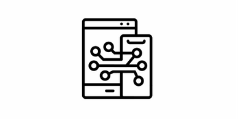
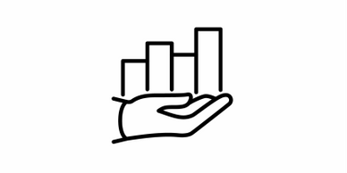
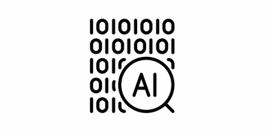

Technical Experience

We are experienced in a variety of operating systems, networks, and databases. We work with just about any technology that a small business would encounter. We use this expertise to help
customers with small to mid-sized projects.We are more focused on taking the problems head-on. We aim to resolve technical issues as quickly as they can, and hence, technical support members listen to your problems and our aim is to help you
fix the problems you are facing.
High ROI

Do you spend most of your IT budget on maintaining your current system? Many companies find that constant maintenance eats into their budget for new technology. By outsourcing your IT management to us, you can
focus on running your business. we believe that A ratio over 5:1 is considered strong for most businesses, and a 10:1 ratio is exceptional. Achieving a ratio higher than 10:1 ratio is possible, but it shouldn't be the expectation. Your target ratio is largely dependent on your cost structure
and will vary depending on your industry.
IT Solutions

The world of technology can be fast-paced. That's why our goal is to provide an experience that keeps up with your company's needs. We will help you understand how to plan for your technology needs
and invest in your infrastructure. We provide: Hardware & Software. Hardware. ...
Network Infrastructure. A company's network infrastructure would typically include its internet connectivity and internal networking between computers and other devices (such as printers). ...
Mobile Device Management. ...
Cloud Computing. ...
Cyber Security.